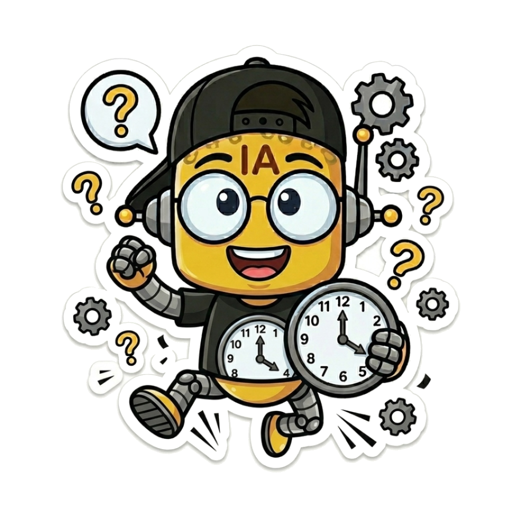
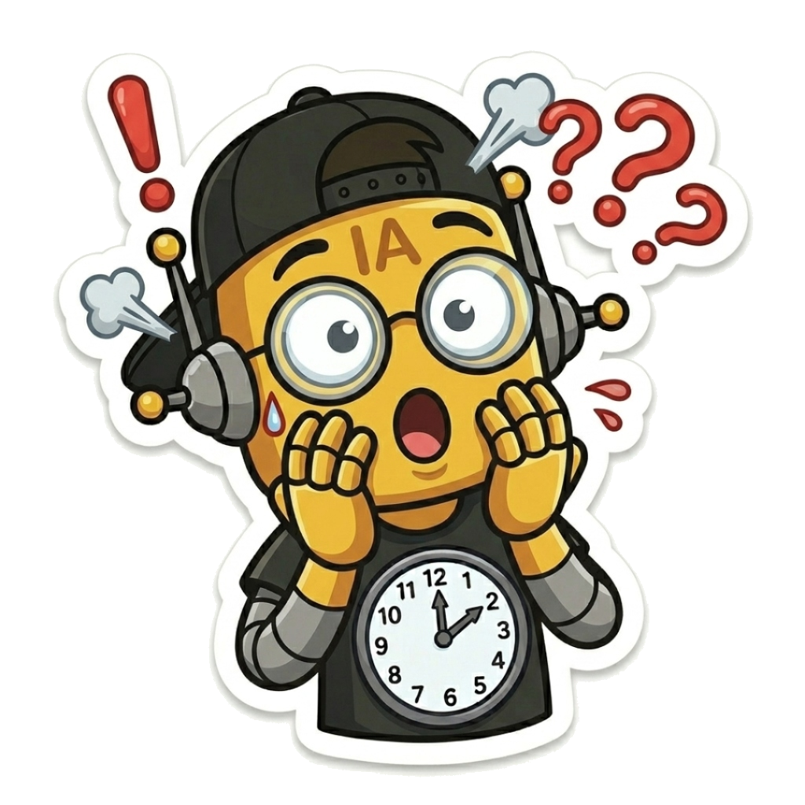

No necesitas trabajar más horas ni llevarte pilas de pruebas a la mesa del comedor: necesitas un mejor sistema.
Aprende a delegar la burocracia escolar en Inteligencia Artificial adaptada al aula real, sin tecnicismos y sin perder tu sello pedagógico.

Nadie que no se haya parado frente a 40 estudiantes con realidades diversas entiende lo que significa educar hoy. La vocación no desaparece en la sala: se apaga por lo que te exigen hacer fuera de ella.

Vivir corriendo contra los plazos no es falta de compromiso. Es tener herramientas del siglo pasado para exigencias del 2026.
Llegas a tu casa y la cabeza no se apaga. Corregir pruebas acumuladas, redactar informes y responder mensajes mientras tu familia cena o descansa sin ti.
Diseñar secuencias didácticas completas, objetivos de aprendizaje (OA), indicadores y momentos de inicio, desarrollo y cierre sintiendo que reinventas la rueda cada trimestre.
Bitácoras, entrevistas de jefatura, fichas PIE y adaptaciones multinivel sin contar con horas no lectivas suficientes para hacerlo con la calma que tus estudiantes merecen.
Decenas de aplicaciones nuevas cada mes y teóricos que jamás pisaron una escuela pública diciéndote que te quedarás obsoleto. Sientes la IA como una carga más en vez de una ayuda.
No necesitas ser programador. El Método ROL es un marco práctico diseñado para que la tecnología trabaje para ti, y no tú para la pantalla.
Automatiza informes de jefatura, rúbricas analíticas con descriptores graduados y pautas de cotejo en minutos, no en días. La IA es tu asistente para el primer borrador.
Diseña experiencias didácticas conectadas con el mundo real de tus alumnos: preguntas detonantes, retos colaborativos y adecuaciones DUA que despiertan curiosidad genuina.
Cierra tu computador cuando suena el timbre de salida. Las tardes, los fines de semana y el descanso mental vuelven a pertenecerte a ti y a tus seres queridos.
En lugar de saltar caóticamente entre 20 pestañas, articulamos un flujo de trabajo fluido con herramientas 100% gratuitas:
Diseña secuencias didácticas profundas, adecuaciones DUA y rúbricas con vocabulario pedagógico riguroso.
Crea guías de ejercicios, tickets de salida y cuestionarios adaptados por nivel de dificultad en un clic.
Sube las bases del Mineduc o tus textos de estudio para consultar y citar fuentes institucionales sin alucinaciones.
Convierte esquemas en diapositivas visuales e infografías listas para imprimir o proyectar en tu clase.
Olvídate de pedirle cosas vagas a la IA como "hazme una prueba". En la comunidad aplicas la fórmula:
[Actúa como + Experto] + [Contexto con corchetes] + [Formato de salida]
⚠️ Resultado: Actividades superficiales, sin alineación curricular, sin criterios DUA y que te obligan a corregir todo a mano durante horas.
En Profes Libres con IA no eres un espectador pasivo de cursos grabados. Es un espacio gamificado donde desbloqueas recursos de alto impacto conforme compartes y aprendes:
Acceso inmediato al marco de trabajo con tutoriales paso a paso para planificar tus clases, evaluaciones y rúbricas con Gemini, ChatGPT y Claude, más el foro de bienvenida para docentes.
Desbloquea el compilado definitivo con 100 fórmulas exactas probadas en sala de clases para resolver el 90% de tus tareas pedagógicas y burocráticas.
Acceso a flujos avanzados de NotebookLM y Tichi, sesiones periódicas de consultoría pedagógica en vivo con Pablo Mardones y banco de prompts para jefaturas complejas.
10 categorías exhaustivas para que nunca más te enfrentes a una pantalla en blanco:
Para que notes el impacto de inmediato, tu bienvenida en Skool comienza respondiendo 3 preguntas de reflexión que transformarán tu relación con el tiempo docente:
No soy un programador de Silicon Valley ni un consultor de oficina que viene a decirte desde un púlpito cómo deberías hacer tus clases. Durante más de 6 años he estado de pie en salas de colegios públicos de Chile, con tiza, plumón y 40 estudiantes con realidades complejas.
Conozco en carne propia el cansancio de salir de una jornada agotadora, atender apoderados en los recreos y luego llegar a la casa a escribir una prueba desde cero. En 2023 estuve al borde del colapso vocacional.
Descubrí que la Inteligencia Artificial, bien encauzada con rigor pedagógico, no reemplaza al docente: lo rescata de la asfixia burocrática.
"Ningún profesor debería tener que elegir entre ser un docente de excelencia y tener una vida personal digna."
Respuestas directas, claras y sin letra chica para docentes.
No, es 100% gratuita. El acceso a la comunidad en Skool, las lecciones fundamentales del Método ROL y las plantillas de inicio no tienen ningún costo. Nuestra misión es democratizar estas herramientas para todos los docentes de Latinoamérica.
Para nada. Si sabes enviar un mensaje por WhatsApp o escribir un correo electrónico, ya tienes todas las habilidades necesarias. Te mostramos paso a paso qué botones presionar y qué plantillas exactas copiar y pegar.
Todo lo contrario. La IA se encarga de las tareas repetitivas y mecánicas (redactar tablas, organizar pautas, formatear ejercicios). Tú aportas lo verdaderamente insustituible: la empatía, el criterio pedagógico, el vínculo afectivo y la mirada atenta sobre las necesidades de tus alumnos.
Totalmente. El Método ROL funciona para cualquier asignatura (ciencias, humanidades, matemáticas, artes, idiomas, educación física) y te enseña a alimentar a la IA con las bases curriculares oficiales de tu propio Ministerio de Educación (como los OA del Mineduc en Chile o los estándares de tu país).
El 95% de todo lo que enseñamos se realiza con las versiones completamente gratuitas de Claude, NotebookLM, Canva, Gemini y Google Drive. No necesitas gastar un solo peso extra en software para liberar horas de tu semana.
Da el primer paso hoy. Entra a la comunidad, descarga tus primeras plantillas y comprueba cómo el Método ROL te devuelve tus fines de semana desde esta misma semana.
👉 Unirme Gratis a Profes Libres con IA en Skool